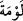
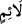

kavmin diğer bir sıfatıdır. Önceki sıfatla irtibatlı, akabinde gelen diğer sıfatla beraber
“çetin” olmalarının keyfiyetini açıklamaktadır. “Ve hiçbir kınayanın kınamasından
korkmazlar.” Medhedilen bu insanlar Allah yolunda cihâd etme vasfıyla, dîne sıkı
sıkıya bağlılık vasfını kendilerinde toplarlar.
Bu ifadede münâfıklara îmâ edilmektedir. Çünkü onlar İslâm ordusunda savaşa
çıkınca dostları yahûdîlerin kınamasından korktular. Bu sebeple de neredeyse
kendilerine yahûdîlerden kınama gelecek hiçbir işi yapmazlardı.
Âyet metninde geçen “
” kelimesi, “bir kere kınama” demektir. Hem “
”
kelimesinin hem de “
” kelimesinin nekra olarak gelmesi mübâlağa ifade eder. Âdetâ
şöyle denilmektedir: Kimden gelirse gelsin, nasıl olursa olsun hiçbir kınayıcının
kınamasından korkmazlar. İlk mübalağa, bütün kınamalardan korkmamalarıdır. İkinci
mübalağa ise bütün kınayıcılardan korkmamalarıdır. Mânânın bu kadar geniş olması
nekranın nefiyden sonra bulunması sebebiyledir. Çünkü nekra, siyâk-ı nefiyde umum
ifade eder.
Bahsi geçen “Bu” muhabbet, tevâzu, izzet, Allah yolunda cihâd, kimsenin
kınamasından korkmamak gibi güzel sıfatlar “Allah’ın dilediğine verdiği lütfudur.” Bir
lütfu ve ihsânıdır. Fakat bu lütuf sadece onlara mahsus değildir. Vermeyi murad ettiğine
bahşeder. Hikmet ve maslahat muktezâsınca dilediklerini bunları kazanmaya ve elde
etmeye muvaffak kılar. “Allah”ın lütfu ve fazlı “geniştir, her şeyi bilendir.” Her şeyi
ziyâdesiyle bilir ki kimin bu fazilete ehil ve layık olduğunu bilmek de buna dâhildir.
Hâfız şöyle der:
Âb-ı hayatı İskender’e vermezler
Bu güçle, parayla olacak iş değil ki
Şunu bil ki, sâliklerden bir kısmı engelleri ve perdeleri ancak yetmiş yılda aşıp
geçebilir. Bir kısmı bunu yirmi senede başarır. Bir kısmı, bir senede bu neticeleri elde
eder. Bir kısmı bir ayda, hattâ bazıları bir haftada ya da bir saatte aşabilir. Özel bir
inâyete ve tevfîka mazhar olanlar bir lahzada bile aşabilirler. Firavun’un sihirbazlarını
düşün! Mûsâ (a.s.)’ın mûcizesini görünce bir anda îman ettiler. “Âlemlerin Rabbi’ne
inandık.” (A’raf, 7/121) dediler. Hakikati gördüler ve onu çok kısa bir sürede kabul
ettiler. Bir saatte, hattâ daha az bir zamanda ârif-i billah oldular.
Hikâye edildiğine göre İbrâhim Edhem dünyâ işinde elde edeceğini etmişti. Bundan
yüz çevirdi, hak yola girdi. Hâlini düzeltmesi için katettiği yol Belh ile Merv arasındaki
mesafeydi. Öyle bir mertebeye ulaştı ki orada köprüden derin bir suya düşen adama
olduğu yerde kalmasını işaret etti. Adam havada olduğu yerde kaldı ve kurtuldu.